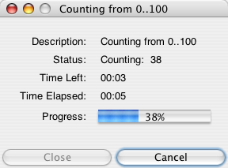

Task Framework for running and monitoring long-running processes
within Cytoscape.
Task Framework: Overview
For our purposes, we define a Task as any long-running process that may
occur within Cytoscape. A long-running task may take several seconds
or several minutes to complete. For example, retrieving data from a remote
database, running a layout algorithm, or running a custom algorithm on
expression data are all examples of tasks.
When running a task, it is important that the main Cytoscape UI remain
responsive, and it is therefore imperative that tasks run in a separate
thread. This task package provides a convenient framework for building
new tasks in separate threads, and for monitoring those tasks from the
Cytoscape UI.
Task Attributes
Tasks share a number of important attributes, and the task framework
provides support for the following:
Creating New Tasks
To create a new task, create a new class which extends
{@link csplugins.task.BaseTask BaseTask}, and provide an
implementation for the
{@link csplugins.task.BaseTask#executeTask executeTask()} method.
Your subclass is then responsible for indicating whether it is determinate
or indeterminate, updating its own progress, providing time
estimates on remaining execution time, setting its own error
messages, and deciding what to do when interrupted.
For a bare bones example task, refer to
{@link csplugins.task.SampleTask SampleTask}. This task
counts from 0..100 in 5 seconds, provides time remaining estimates,
and provides for interruptability.
The MVC Pattern and Creating Swing Safe Tasks
In context of the Model-View-Controller (MVC) pattern, we consider
Tasks to be Model objects. These model objects run specific processes,
and provide updated information about those processes. Tasks should
therefore never contain a View, and should never never modify UI components
directly. This is in keeping with the Swing Single Thread rule:
"Once a Swing component has been realized, all code that might affect or
depend on the state of that component should be executed in the
event-dispatching thread."
If your task must modify a UI component, you are advised to use one of the
{@link javax.swing.SwingUtilities javax.swing.SwingUtilities}:
- {@link javax.swing.SwingUtilities#invokeLater invokeLater()}:
Requests that some code be executed in the
event-dispatching thread. This method returns immediately, without waiting
for the code to execute.
- {@link javax.swing.SwingUtilities#invokeAndWait invokeAndWait()}:
Acts like invokeLater(), except that this method waits for the code to
execute. As a rule, you should use invokeLater() instead of this method.
For additional information on creating Swing safe tasks, refer
to the following resources:
Monitoring / Managing Tasks
The Task framework also includes a reusable
{@link csplugins.task.ui.TaskMonitorUI TaskMonitorUI} class for
monitoring / managing long-runnning tasks.
A sample screenshot of the TaskMonitorUI class is shown below:
